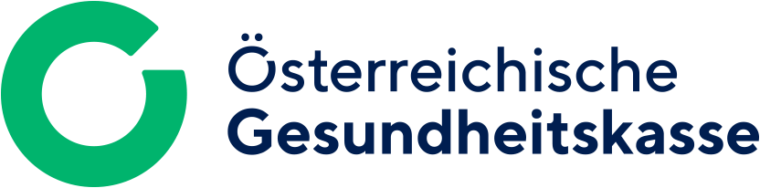
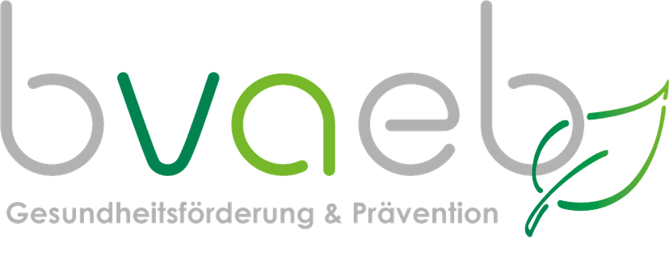

Fachkompetenz
Spezialisierte Therapien für Bewegungsapparat-Störungen, Schmerzbehandlung und funktionelle Wiederherstellung mit modernsten Technologien und evidenzbasierten Methoden.
Mehr erfahren →Spezialisierte Therapien für Bewegungsapparat-Störungen, Schmerzbehandlung und funktionelle Wiederherstellung mit modernsten Technologien.
Der Mensch muss stets im Mittelpunkt aller medizinischen, ökonomischen und fachlichen Bemühungen stehen.
Dr. med. univ. Fadime Cenik
Fachärztin für Physikalische Medizin und allgemeine Rehabilitation
Spezialisiert auf physikalische Medizin, Rehabilitation und innovative Schmerztherapie mit modernsten Technologien.
Alle Kassen


Spezialisierte Behandlungen für optimale Gesundheit und Funktionalität
Spezialisierte Therapien für Bewegungsapparat-Störungen, Schmerzbehandlung und funktionelle Wiederherstellung mit modernsten Technologien und evidenzbasierten Methoden.
Mehr erfahren →MedUni Wien, Facharztdiplom, kontinuierliche Fortbildung
Mehr erfahren →Wien 11, Kaiser-Ebersdorfer-Straße 328
Mehr erfahren →Neueste Entwicklungen in der Rehabilitationsmedizin und Gesundheitsforschung
AI-gestützte Bewegungsanalyse revolutioniert die Physiotherapie durch objektive Datenerfassung, Hybrid-Care-Modelle, Wearable-Sensoren und Virtual Reality-Integration für präzisere Patientenbetreuung.
Lesen →Revolutionäre Gen-Therapie zielt auf Schmerzrezeptoren im Gehirn ab und eliminiert das Suchtrisiko – ein Paradigmenwechsel in der chronischen Schmerzbehandlung.
Lesen →Fortschrittliche Neurorehabilitation adressiert neuropathische Schmerzen, Spastizität und Funktionsverlust durch interdisziplinäre Ansätze und innovative Technologien.
Lesen →
Wenn Sie Ihre Lieben beschenken wollen, können Sie bei uns gerne auch Gutscheine erwerben. Wählen Sie aus verschiedenen Paketen und schenken Sie Gesundheit und Wohlbefinden.
Gutschein anfragenMontag: 07:00 – 19:00
Dienstag – Donnerstag: 06:30 – 19:00
Freitag: 06:30 – 17:00
Samstag & Sonntag: Geschlossen